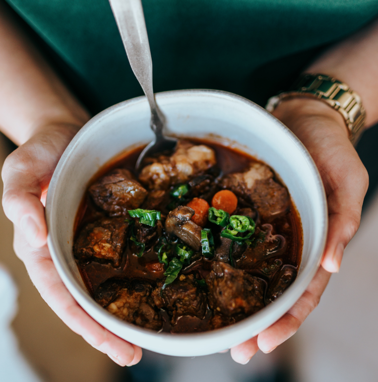

Beef Stew

Photo by Nathan Dumlao on Unsplash
Description
And this is it. The one. The best way to use potatoes.
Ingredients
- 2 lbs stewing beef, trimmed and cubed
- 3 tbsp flour
- 1/2 tsp garlic powder
- 1/2 tsp salt
- 1/2 tsp black pepper
- 3 tbsp olive oil
- 1 onion, chopped
- 6 cup beef broth
- 1/2 cup red wine (optional)
- 1 lb potatoes, peeled and cubed
- 4 carrots, peeled and chopped
- 4 stalks celery, cut into 1 inch pieces
- 3 tbsp tomato paste
- 1 tsp dried rosemary
- 2 tbsp cornstarch
- 2 tbsp water
- 3/4 cup peas
Instructions
- Combine flour, garlic powder, and salt & pepper. Toss beef in flour mixture
- Heat olive oil in a large Dutch Oven or pot. Cook the beef and onions until browned
- Add beef broth and red wine while scraping up any brown bits in the pan
- Stir in all remaining items excpet peas, cornstarch, and water. Reduce heat to medium low, cover and simmer 1 hour or until beef is tender (up to 90 minutes)
- Mix equal parts cornstarch and water to create a slurry. Slowly add the slurry to the boiling stew to reach desired consistency (you may not need all of the slurry)
- Stir in peas and simmer 5-10 minutes before serving. Season with salt & pepper to taste
Recipe written by Spend with Pennies